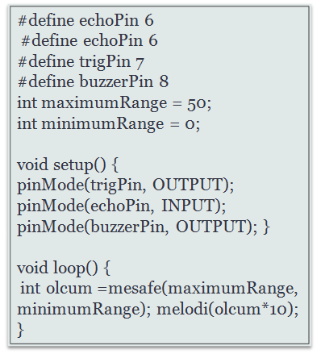

ARDUİNO İLE MESAFE SENSÖRÜ
Kodlama

Kodların Anlamları
#define: Bu komutu ile pinleri arduino üzerinde nereye bağladığımızı gösterdiğimiz kod.
maximumRange: Bu komutta sensörün en fazla algılamasını istediğimiz mesafeyi belirliyoruz.
minimumRange: Bu komutta sensörün en az algılamasını istediğimiz mesafeyi belirliyoruz.
pinMode: Bu komut ile pinlerin giriş (ınput) mi çıkış (output) mı olduğunu programa tanıttığımız komut.
delayMicroseconds: bu komut ile arduinonun bekleme süresini belirliyoruz.
Low: Bu komut ile pindeki enerjiyi sıfırlıyoruz.
Hıgh: Bu komut ile pine enerji almasını sağlıyoruz.